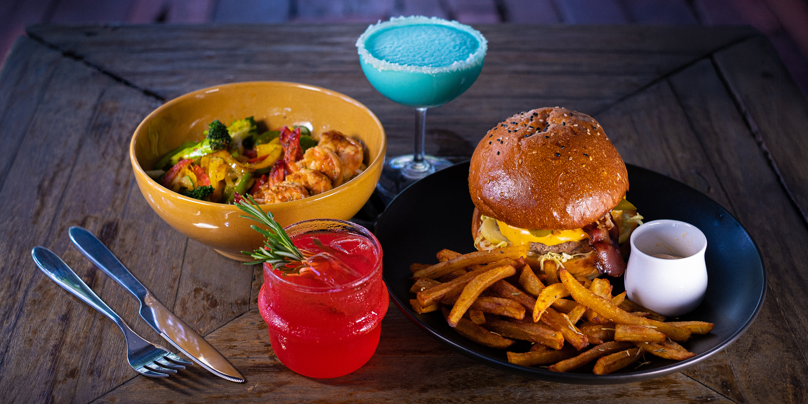
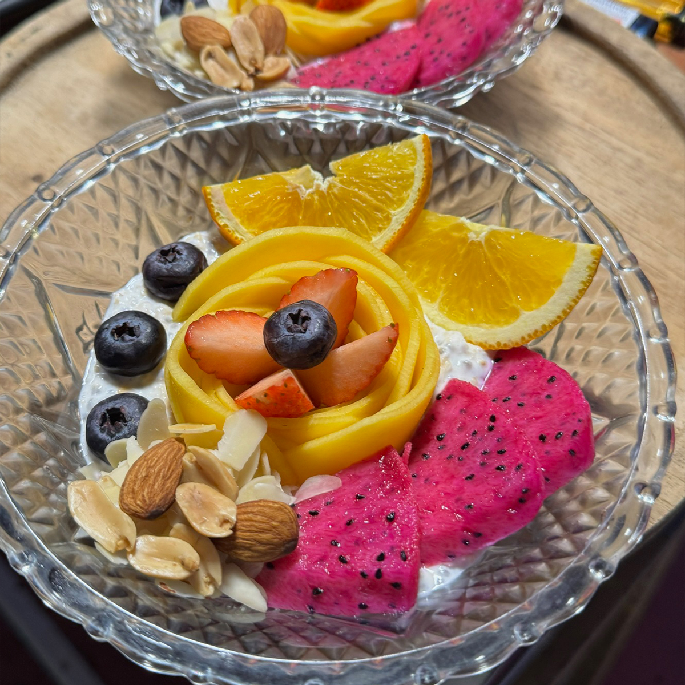
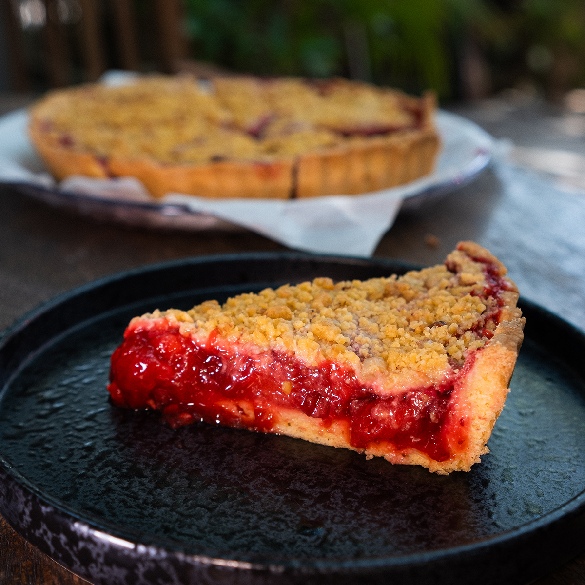
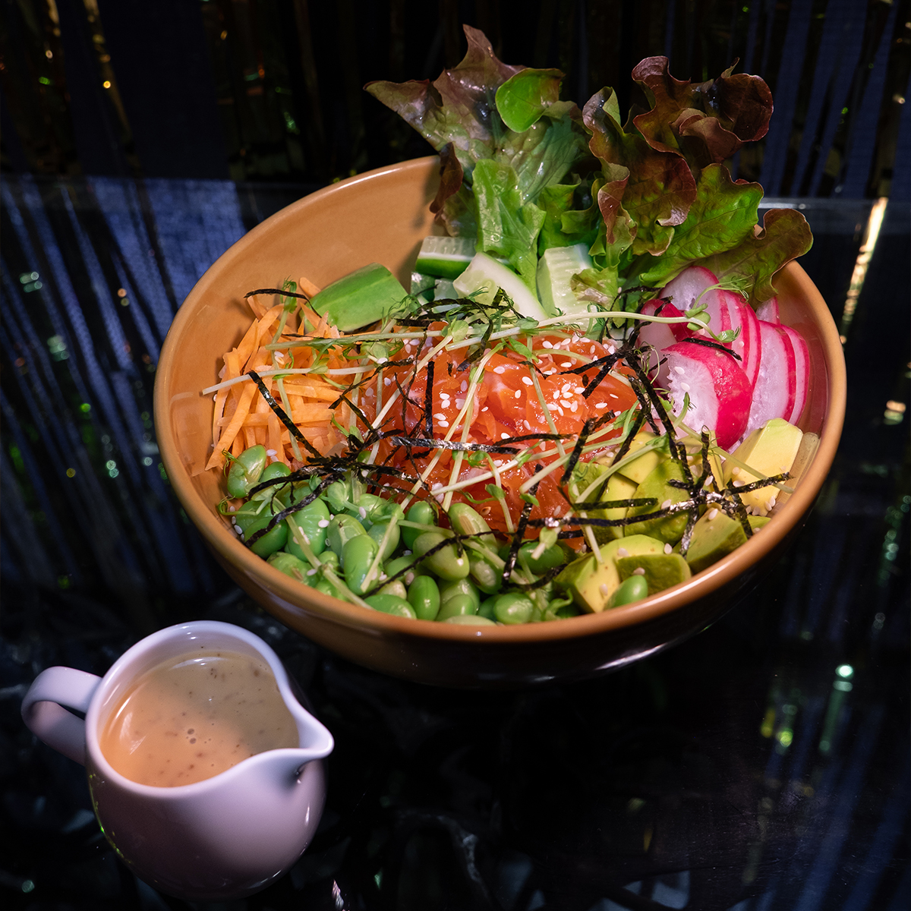
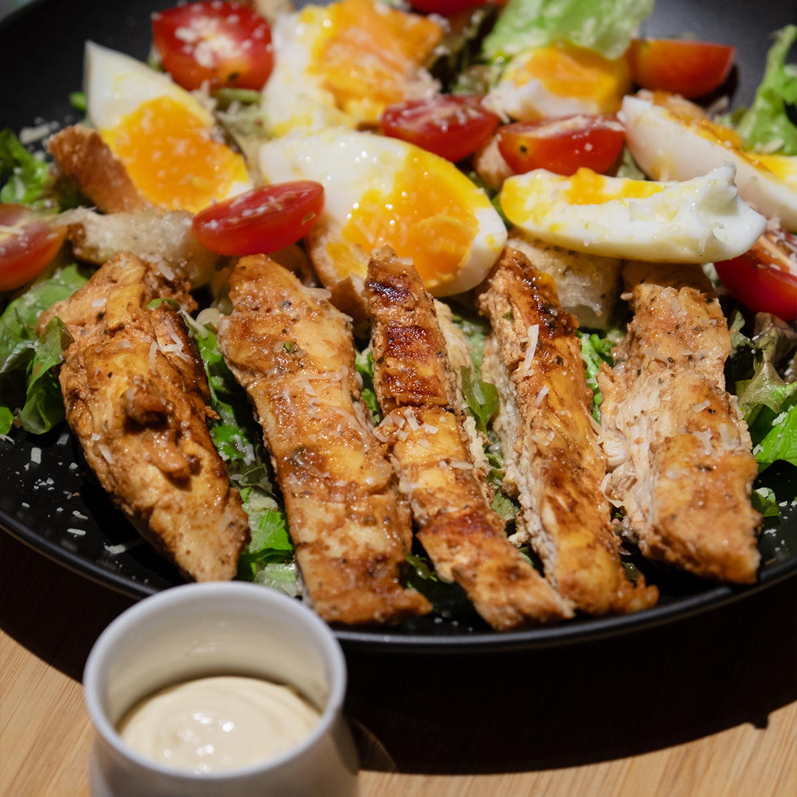

MESTO Restaurant & Bar Menu

MESTO is a restaurant and bar in Don Sai, just a minute from Thong Sala on Koh Phangan.
We are open every day from 4 PM to 11:30 PM for dinner, drinks, and relaxed evenings with friends.
Dinner at MESTO
Our dinner menu includes burgers with Black Angus beef or chicken, as well as a plant-based patty from Let's Plant Meat, a Thai producer we chose for the quality of its meat alternatives.
Beyond burgers, we serve savory and sweet blini, rice, quinoa, sweet potato and pasta bowls, wraps, and appetizers to share. Our salads include a salted salmon poke bowl, Caesar salads with chicken or jumbo shrimp, Lahpet Thoke with fermented tea leaves, and fresh vegetarian options.
Vegetarian dishes are available across the menu, and we also make fully vegan desserts.
Cocktails & Drinks
Pair your dinner with one of our signature or classic cocktails. The bar also serves beer, wine, homemade kvass, fresh juices, coffee, and tea.
We also offer locally made craft sodas with classic Russian flavors such as Tarkhun, Duchess Pear, Barberry, and Cream Soda, alongside Thai craft sodas from Chiang Mai in flavors including Kyoho Iced Tea, Watermelon Lemon, Ginger Tea, and Passion Fruit Pineapple.
Come for a cocktail with friends, stay for dinner, or spend the whole evening enjoying the food and atmosphere at MESTO.
Fresh Ingredients, Made by Hand
We care deeply about what goes into every dish. Our ingredients are carefully selected, and we regularly check the food coming out of the kitchen to keep the quality consistent.
Our French fries are made from fresh potatoes, peeled and cut by hand in our kitchen. Vegetables and jumbo shrimp are prepared fresh to order for each dish.
Many things at MESTO are made by us in-house, including cottage cheese, kvass, pickles, and other preparations that require more time and hands-on work. For us, good food is about honest ingredients, careful preparation, and a standard we genuinely believe in.
Food, Art & Community
MESTO is an independent, artist-run cultural space in a three-story building near Thong Sala.
We host free events ranging from live music, open mics, cinema nights, stand-up, and exhibitions to creative workshops, science talks, queer balls, and costume parties with interactive sets.
Outside, our tropical garden is home to unique swings and a hand-woven rope park built together with our guests—a playground for free-spirited adults.
Come for dinner and drinks, then stay to discover whatever is happening at MESTO that evening.
Curious about how MESTO came to life? Read more about us.



